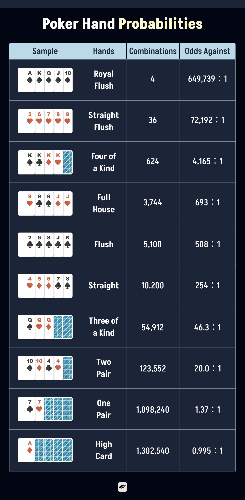

Ever feel like you're just guessing at the poker table? You know there’s strategy involved, but without understanding the numbers, every call or raise can feel like a shot in the dark.
That’s where poker and probability come in. Misreading the odds, ignoring pot odds, or not knowing your equity can quietly drain your stack, hand after hand. Winning isn’t just about reading players; it’s about reading the math behind every move.
In this guide, we’ll break down the core concepts of probability, pot odds, and equity, so you can stop guessing and start making smarter, sharper decisions at every stage of the game.
How to Calculate Probabilities with Poker Hands
Before we dive into calculating poker probabilities and odds, it's important to understand what these terms mean.
Probability is the chance that something will happen. It’s usually shown as a percentage. For example, if an event has a 25% probability, it means it will happen once out of every four times.
Odds, on the other hand, compare the chance something won’t happen to the chance it will. These are usually expressed as “odds against.” For example, if the odds are 4 to 1, it means the event fails four times for every one time it succeeds.
In poker, players often use both probability and odds, but odds against are more commonly used, especially when discussing rare hands like a flush or a straight. This is because poker is a game of decision-making that strikes a balance between risk and reward. Thinking in odds helps players quickly assess whether it's worth calling a bet based on how likely (or unlikely) their hand is to improve.
Poker hand probabilities are calculated using combinatorics, specifically, the concept of combinations (nCr). In a standard 52-card deck, there are 2,598,960 possible 5-card hands. For each hand type, we divide the number of possible combinations of that hand by the total number of hands to calculate the probability, and then convert it into odds against. Here are the details:
Royal Flush
A royal flush is the highest and rarest hand in poker. It’s made up of the Ace, King, Queen, Jack, and Ten, all in the same suit. Only four royal flush combinations exist, one for each suit.
To calculate the probability, you divide those 4 combinations by the total number of 5-card hands in poker (2,598,960), which gives a very tiny chance of about 0.000154%. The odds against being dealt a royal flush are around 649,739 to 1.
Straight Flush
A straight flush is five cards in sequence, all of the same suit, but not the royal flush. For example, 5-6-7-8-9 of hearts. A standard deck contains 36 possible straight flush combinations with five consecutive cards of the same suit, excluding royal flushes. That gives you a probability of about 0.00139%, and odds against of roughly 72,192 to 1.
Four of a Kind
This is when you get four cards of the same rank, like four Kings. To calculate this, you consider the 13 possible ranks and 48 possible fifth cards. That results in 624 combinations. The probability is about 0.024%, and the odds against are about 4,165 to 1.
Full House
A full house is a hand with three cards of one rank and two cards of another rank — for example, three 9s and two Jacks. There are 3,744 ways to make a full house. This gives you a probability of about 0.1441%, and the odds against getting one are around 693 to 1.
Flush
A flush is a hand made up of five cards from the same suit, but not in consecutive order. For example, 2, 6, 8, Jack, and King of clubs. There are 5,108 possible flush combinations in a 52-card deck. The chance of being dealt a flush is about 0.1965%, and the odds against it are about 508 to 1.
Straight
A straight is five cards in numerical order, like 4-5-6-7-8, but not all in the same suit. 10,200 combinations make a straight. That works out to a probability of 0.3925%, or odds of about 254 to 1 against being dealt a straight.
Tree of a Kind
This hand has three cards of the same rank, such as three Queens, plus two other unpaired cards. 54,912 combinations make three of a kind. That gives you a probability of around 2.1128%, and the odds against getting it are about 46.3 to 1.
Two Pair
Two pair means you have two cards of one rank, two cards of another rank, and a fifth card of a different rank. Like 10-10, 4-4, and a 9. There are 123,552 possible two-pair combinations. That’s a probability of roughly 4.7539%, or odds against of about 20 to 1.
One Pair
This is a hand with one pair and three other unconnected cards. For example, two 7s with a King, a 9, and a 4. It’s a very common hand with 1,098,240 combinations. The probability is about 42.2569%, with odds of roughly 1.37 to 1 against.
High Card
A high card hand is when your five cards don’t form any pair, straight, or flush. For example, 2, 5, 9, Jack, and King — all different suits and ranks. It’s the most common type of hand, with 1,302,540 combinations. The chance of being dealt a high card hand is about 50.1177%, and the odds against it are just under 1 to 1.
Probability Chart of Each Poker Hand
| Hand | Combinations | Probability (%) | Odds Against |
|---|---|---|---|
| Royal Flush | 4 | 0.000154 | 649,739:1 |
| Straight Flush | 36 | 0.00139 | 72,192:1 |
| Four of a Kind | 624 | 0.0240 | 4,165:1 |
| Full House | 3,744 | 0.1441 | 693:1 |
| Flush | 5,108 | 0.1965 | 508:1 |
| Straight | 10,200 | 0.3925 | 254:1 |
| Three of a Kind | 54,912 | 2.1128 | 46.3:1 |
| Two Pair | 123,552 | 4.7539 | 20.0:1 |
| One Pair | 1,098,240 | 42.2569 | 1.37:1 |
| High Card | 1,302,540 | 50.1177 | 0.995:1 |

Probability of Hole Cards
In Texas Hold’em, each player is dealt two private cards, and these are called hole cards. There are 1,326 unique combinations of hole cards in a standard deck, and 169 distinct hand types if you ignore suit differences (like A♠K♦ vs. A♥K♣).
To find the probability of being dealt a certain type of hand in poker, divide the number of matching combinations by 1,326, the total number of possible two-card combinations in a standard 52-card deck.
Probability = Number of matching combinations ÷ 1,326
To calculate the odds against getting that hand, subtract the number of matching combinations from 1,326, then divide by the number of matching combinations:
Odds against = (1,326 - Number of matching combinations) ÷ Number of matching combinations.
Let’s take the 2 Aces combinations as an example:
There are 6 possible ways to be dealt pocket Aces, since a pair is made from two Aces of different suits. Since there are 1,326 total possible two-card combinations in a 52-card deck, the probability of being dealt pocket Aces is:
Probability = 6 ÷ 1,326 ≈ 0.00452, or about 0.45%
Odds against = (1,326 - 6) ÷ 6 = 1,320 ÷ 6 = 220 to 1
So, on average, you’ll be dealt pocket Aces once every 221 hands.
| Hole Card Type | # of Combos | Probability (%) | Odds Against |
|---|---|---|---|
| Any Pocket Pair | 78 | 5.88% | 16:1 |
| - Aces (AA) | 6 | 0.45% | 220:1 |
| - Kings (KK) | 6 | 0.45% | 220:1 |
| - Queens (QQ) | 6 | 0.45% | 220:1 |
| Suited Connectors (e.g., 9♠8♠) | 52 | 3.92% | 24.5:1 |
| Unsuited Connectors (e.g., 9♠8♦) | 78 | 5.88% | 16:1 |
| Any Suited Cards | 312 | 23.55% | 3.25:1 |
| Any Offsuit Cards | 936 | 70.59% | 0.416:1 |
| Big Slick (AK suited) | 4 | 0.30% | 330:1 |
| AK offsuit | 12 | 0.91% | 109:1 |
| Ace-any suited | 48 | 3.62% | 26.5:1 |
| Pair 7s or better | 42 (7 pairs) | 3.17% | 30.5:1 |
How to Calculate Pot Odds and Equity in Poker
Whether you’re new to poker or already an experienced player, understanding a bit of simple math can make a big difference in how you play. One of the first things to learn is how to calculate pot odds, equity, and outs. These help you figure out whether you should call a bet, fold your cards, or even raise. Don’t worry, you don’t need to be a math genius. These concepts are easy to understand once you see how they work.
Let’s start with pot odds. Pot odds tell you whether the chips you have to put into the pot are worth it, compared to how many chips you can win.
For example, say the pot is $40, and your opponent bets $10. If you want to call, you’ll also have to put in $10, which makes the total pot $60. To find the pot odds, you take the amount you have to call ($10) and divide it by the total pot after your call ($60). That gives you 10 ÷ 60 = 0.1667, or about 16.7%. This means you need to win the hand more than 16.7% of the time to break even. If your chances of winning (your “equity”) are higher than that, calling is a smart decision.
So, what is equity? In poker, equity refers to your share of the pot based on the strength of your hand and your estimate of what your opponent could be holding. It represents your probability of winning the pot over the long run in a given situation.
For example, if you’re on a flush draw after the flop, meaning you need just one more card to complete a five-card flush, your chance of making that flush by the river might be around 35%. That 35% is your equity. If your pot odds are lower than 35%, it means you’re getting a good call and should probably continue in the game.
Remember, if your equity is higher than your pot odds, it’s usually correct to call or raise. If your equity is lower than your pot odds, you’re losing value and should probably fold, unless you have implied odds or a strategic reason to stay.
Now let’s talk about outs since this can also determine your possible equity.
How to Calculate Outs in Poker?
An “out” is any card that could come next and improve your hand to something strong enough to win.
For example, if you have the Ace and 7 of spades, and the flop comes down King of spades, 10 of clubs, and 2 of spades, you already have four spades. That means you’re just one spade away from a flush.
There are 13 spades in a deck, and you’ve seen 4 of them (your two and the two on the table), so there are 9 spades left in the unseen cards. That means you have 9 outs, meaning 9 cards that could give you the winning hand. If you're about to see just one more card (the turn or the river), the chance of hitting your flush on that next card is: 9 outs ÷ 46 unseen cards ≈ 19.6%.
Rule of 2 and 4
To figure out how likely you are to hit one of your outs (your drawing odds), poker players use something called the Rule of 2 and 4. It’s a simple shortcut. After the flop (when there are still two more cards to come, which are the turn and the river), you multiply your number of outs by 4. If you’re on the turn and waiting for just one more card (the river), you multiply your outs by 2.
So in the example above, with 9 outs, after the flop, you multiply 9 × 4 = 36%. That’s about a 36% chance of hitting your flush by the river. If you’re already on the turn and waiting for the river, it’s 9 × 2 = 18%.
These percentages represent your estimated chance of winning the pot (your equity), assuming the only way you can win is by hitting your draw.
Putting It All Together: Pot Odds, Equity, and Decision
Imagine you have four hearts and need one more for a flush. That gives you 9 outs with 9 remaining hearts in the deck that can complete your hand.
The current pot is $50, and your opponent bets $25. If you call, the pot will grow to $100. You need to call $25 to try to win $100, so your pot odds are 25 ÷ 100 = 25%. That means you need to win at least 25% of the time to make a break-even call.
Since you’re on the flop and hoping to see both the turn and the river, you can use the Rule of 4 to estimate your chance of completing your flush: 9 outs × 4 = 36% So, your estimated equity is 36%, meaning you’ll complete your flush about 36% of the time. Your equity is higher than the pot odds, so calling is a smart move.
On the other hand, let’s say you only had 4 outs, like drawing to a gutshot straight. Then: 4 outs × 4 = 16% equity, which is lower than the pot odds. It would be better to fold in this case.
Learning how to use pot odds, equity, and outs helps take the guesswork out of poker. Instead of just going with your gut, you can use real numbers to decide your next move, be it call, fold, or bet. This is especially useful when you’re on a drawing hand, meaning you don’t have a strong hand yet, but you could make one if the right card comes.
The more you practice using drawing odds and simple math, the more confident and successful you’ll be at the table. Over time, it becomes second nature, and you’ll notice that you’re saving when you should fold and winning more pots when you stick with the odds in your favor.
Poker Odds and Equity Calculators
To calculate your exact equity in a poker hand, you’d have to account for every possible combination of remaining cards that could be dealt. For each one, you’d need to figure out how often your hand wins, ties, or loses against your opponent’s possible range. As you can imagine, this gets complicated fast, especially in multi-way pots or when your opponents could have a wide variety of hands.
That’s why most players turn to equity calculators and poker software. These tools simulate thousands, sometimes even millions, of hands to show how often your hand comes out ahead. They're incredibly helpful for learning the odds, reviewing hands after a session, testing strategies, and understanding how your hand performs against different opponent ranges.
Are Poker Odds Calculators Allowed During Games?
But here's a key question: can you use these tools while playing? The short answer is no. Online sites have different policies; some allow basic calculators, others ban them entirely, so always check the site’s rules first. In live casino games, electronic devices like odds calculators are almost always prohibited to keep the game fair. It is best to always clarify the rules before playing to avoid any issues.
However, using them between games or during study sessions is not just allowed, it’s one of the best ways to improve. If you're serious about leveling up your poker skills, spending time with these tools off the table is a smart move.
Popular Poker Odds Calculators
One of the most popular and beginner-friendly poker odds calculators is the PokerNews Poker Odds Calculator. This free, browser-based tool requires no downloads and lets you enter your hole cards, community cards, and multiple opponent hands. It instantly calculates your equity and provides visual feedback, making it ideal for casual players who want to review hands or quickly learn poker math through an interactive experience.
Another highly respected tool is PokerStove, a classic Windows-based application that serious poker players have used for years. It allows you to input full hand ranges for both you and your opponents and runs fast simulations to deliver precise equity calculations. While its interface is simple, its depth and accuracy make it perfect for players ready to dive deeper into poker math and analyze complex hands.
Show off Your Poker Skills at Pokerrrr 2 Now
Now that you’ve explored the ins and outs of poker hands and probabilities, it’s time to take what you’ve learned and bring it to life. Whether you’re mastering pot odds, calculating equity, or counting outs on the fly, the best way to grow is by playing. With Pokerrrr 2, you can turn knowledge into action. Host private games, challenge friends, and enjoy real-time poker experiences in Texas Hold’em, Short Deck, Omaha, and more. It’s your personal poker table, anytime and anywhere. Download Pokerrrr 2 today and turn every hand into a chance to sharpen your skills, have fun, and outplay the competition.